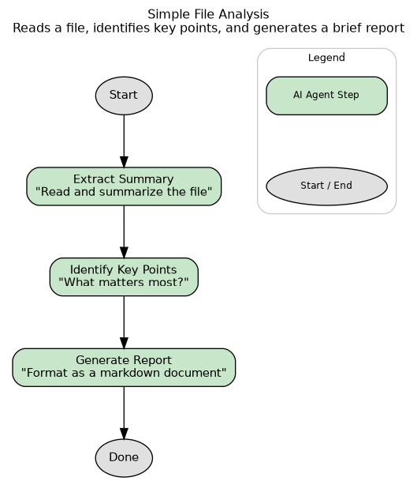
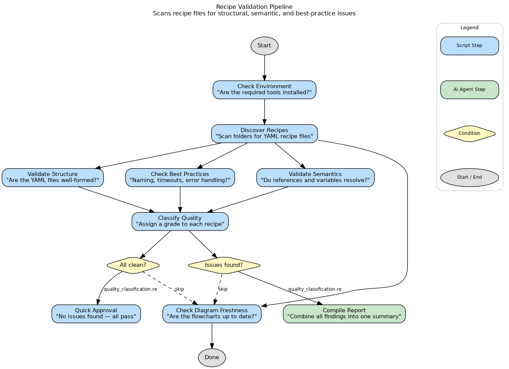
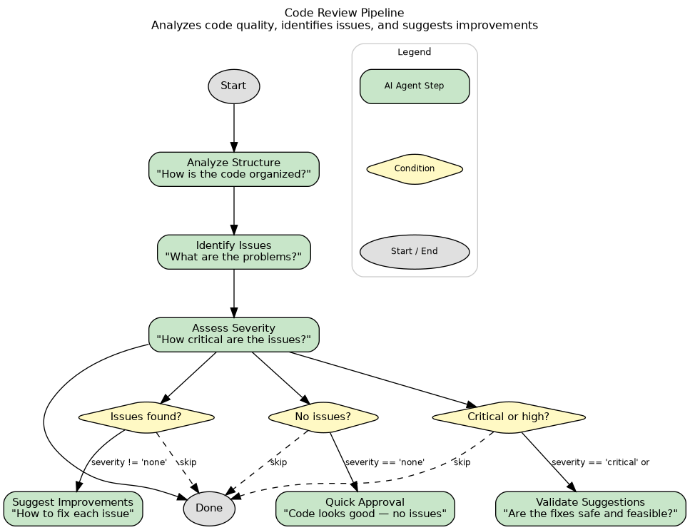
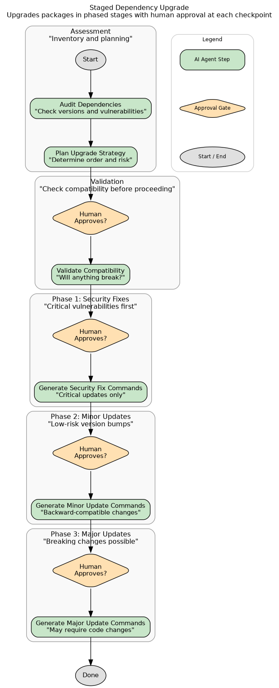
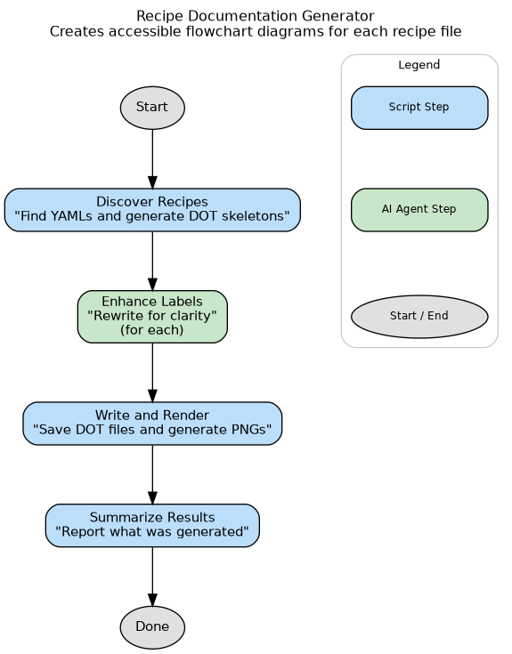
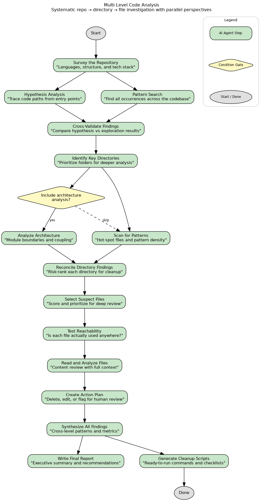

Every recipe now tells its own story — visually.
Automated flowchart documentation for the entire recipe ecosystem.
Amplifier recipes are powerful multi-step workflows — but they live as dense YAML files. As recipes grow in complexity (stages, approval gates, conditionals, parallel branches), understanding what a recipe actually does requires reading every line.
• New engineers can't tell what a recipe does at a glance
• Reviewers read YAML diffs without structural context
• No visual distinction between step types
• Sub-recipe calls are buried in text
• Approval gates and conditionals are invisible
Can you tell what this recipe does? Where the gates are?
Automatically. Co-located. Always fresh.
recipe_to_dot.py — pure-Python module, 33 tests. No LLM needed for structure. Color-coded by step type.
generate-recipe-docs recipe rewrites labels so non-technical readers can understand each step.
Embedded source_hash in every DOT file. Validation detects stale diagrams and regenerates them automatically.
Every node shape and color carries meaning. At a glance, you can see where humans are needed, which steps call sub-recipes, and where the workflow forks.
Stages become labeled clusters with dashed borders, so you can see the high-level flow (validation → review → generation) at a glance.

simple-analysis-recipe.yaml — the simplest case. It only gets more valuable as complexity grows.
A 3-stage, 14-step pipeline with validation, review, and auto-generation phases. Try understanding this from YAML alone.

validate-recipes.png — auto-generated with LLM-enhanced labels
Staged approvals, parallel branches, sub-recipe calls — the system handles them all. 21 recipes now have auto-generated diagrams.



The deterministic core produces structurally correct diagrams with raw step names.
The generate-recipe-docs recipe then passes
each DOT through an LLM that rewrites every label into plain English.
Opt out with enhance_diagrams: "false"
The doc-generation pipeline itself
Every DOT file embeds a source_hash of the YAML it was generated from.
Validation catches drift automatically.
Computes SHA-256 of each YAML and compares against the source_hash
embedded in the DOT file comment header. Reports stale and missing diagrams.
Runs the full pipeline (DOT generation + LLM label enhancement + PNG render)
for any stale or missing diagrams. Enabled by default in validate-recipes.
695-line deterministic converter. YAML in, DOT out. 33 tests. No LLM dependency.
LLM-powered label enhancement pipeline. Turns technical step names into human-readable descriptions.
Freshness checking and auto-regeneration integrated into the existing validation pipeline.
Documents the convention and freshness model so agents and humans follow the same rules.
recipe-author and result-validator agents now know about the diagram convention. They generate and validate diagrams as part of their normal workflow.
While reviewing the newly generated diagram for multi-level-python-code-analysis, it was immediately obvious that several steps could run in parallel — something invisible in 700+ lines of raw YAML. The diagram made it obvious. Result: v1.0.0 → v1.1.0 with 3 parallel fork-join pairs, shipped the same day.
The takeaway: visual docs aren’t just documentation — they’re a design tool. Seeing the flow surfaced optimization opportunities that were invisible in raw YAML.

15 steps, 3 fork-join pairs — spotted in the diagram, invisible in YAML
Core recipe_to_dot.py module, tests, initial DOT generation for all recipes
LLM-enhanced label pipeline, generate-recipe-docs recipe, validation integration (Phase 7/7b)
Parallelized multi-level-python-code-analysis with depends_on across 15 steps
Repository: microsoft/amplifier-bundle-recipes
recipe_to_dot.py source (695 lines)multi-level-python-code-analysis.yaml (15 steps with depends_on)enhance_diagrams: "false"Data as of: April 2026 | All metrics from direct repository inspection
Every new recipe gets a flowchart automatically.
Every existing recipe already has one.
Write your YAML as usual. The recipe-author agent generates the diagram automatically.
Run validate-recipes. Phase 7 checks freshness. Phase 7b regenerates stale diagrams.
Open the PNG next to any recipe. See the flow, the gates, the branches — instantly.